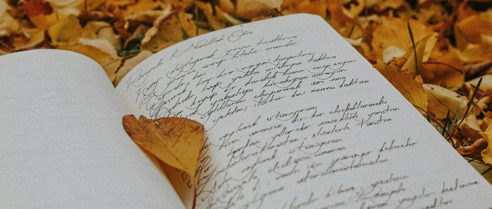

去了一趟英伟达总部~
美股大跌后微涨，不过跳空缺口还有一个没填上，后续要是再跌一些也不奇怪。
礼来上涨2%，收盘价925+美元。由于盘中一度上涨到955美元，这不仅让我在925和930共减仓10%的设置被触发，连数月之前设置的950减仓5%的设置都被触发了…合计减仓达15%;
之前礼来已经在880-930时做成负成本，8月10日左右又在下跌时（620-660）买入较多，这次逢高减仓一部分，让礼来的成本适当降低一些。
后续设置了990和1000各减仓5%，耐心等。调整后，礼来可以一直拿着，仓位和成本（平均成本159）都很合适，没有压力。
联合健康还在震荡筑底，我主要在250、260和280+的价位段超量买入，所以在318时T掉了一些，又在370-375卖掉一部分，仓位占比和成本下降一部分后，压力没那么大，可以一直拿到它达到预期再逐步减仓。
生物医药板块的其他持仓，诺和诺德也在震荡筑底。这个板块的个股，整体需要中长期持有，短期内没什么机会。
消费股的持仓，除了麦当劳上涨2%外，其他的都微跌。
伯克希尔上涨了些，VISA还在340-350之间飘。
科技股的持仓，微软下跌1.39%至507美元，英伟达下跌1.75%至195+美元。这两家公司都挺不错的，在我的持仓中它们分别排名1-2。后续没有打算做减仓操作。
今天签完人工智能VC项目的合同后，我去英伟达硅谷总部拜访了一位朋友，早些年在做对冲基金模型时，因朋友介绍结识了他。
他在英伟达十几年，老员工，职位属于能跟黄仁勋直接汇报工作的36个人之一，手上持有大量的英伟达股票。
我跟他说，感谢他们在人工智能领域芯片上的前瞻性和建树，让我有机会搭上英伟达这趟车，不仅投资收获丰厚，投资体系也实现了深度完善和再进化，今年4月英伟达大跌时，我在86-100买了很多。
他告诉我，英伟达的危机意识一直都很强，因为黄仁勋认为“老二就是失败者”，工作压力大，公司也不像微软、谷歌那样有放松/享受型的硬件配置。
做得不好，会被黄仁勋劈头盖脸骂一顿，但几乎不会有丢了工作的风险，黄属于“刀子嘴豆腐心”类型，对员工还是很好的，骂人更多属于“怒其不争”。
这趟行程，我收获挺大的。更深刻地感受到:科技和工业没有弯道超车，只有脚踏实地。
Meta上涨1.38%，在627后开始触底反弹，收盘价约636美元。Meta这轮下跌，属于财报上的短期利空，没有改变基本面。
现在的市场，对科技股的期望值太高，这点在这轮财报发布之前写过。因此，稍有不如意、瑕疵，就开始砸盘。
说白了，到目前这个阶段，市场对于“人工智能有没有泡沫”这个问题，看法分成完全不同的两派。其实，适当的泡沫反而是好的，能助推发展，但如果泡沫太大，就需要注意风险。
投资本身的前提条件就是做好风险控制。因此不要去追高，反而适合在暴跌后市场恐慌时，买入有把握、看得懂的个股。
追高的很容易被套，Meta、甲骨文、奈飞、CRCL…案例不在少数。
Meta我这轮在650和627合计买入1.1万股，现在Meta的平均成本升至175+美元。准备等780-810再T掉一部分。
其他的个股，没什么操作，谷歌修复285美元，亚马逊站稳250美元。特斯拉、AMD、博通等，在暴跌后也开始修复。台积电、苹果也在预期范围内。
最近老有新读者问我怎么不炒大A？我不喜欢赌博。不是国外的月亮比较圆，只是投资是做确定性强的事。美股确实确定性比较强，我做得也还不错。
再说，只有半夜还要工作的人，才在乎月亮圆不圆。
除了科技股之外，我今年还重点增配了防守型资产，比如短期美债、红利股、不动产和港险等。其中港险属于防守偏稳健，在同样安全的情况下，其他方式的收益没有它高；而在同样收益高的情况下，又没有它安全。
不过，要选对产品挺难的，需要懂得看。和选对个股一样难，选得不对，投资白费。
… …
昨天小儿子上体能课之前，给我打电话。
他说老师刚在别的地方上完课，立马赶过来社区里给他们上课。迟到了几分钟，有的家长真没素质，就开始在群里说人家。
“老师也是人呀，也需要吃饭，需要休息，偶尔晚几分钟又没什么。妈妈说了现在的年轻人很不容易，老师还是个上进的年轻人”。
我跟他说，“偶尔晚几分钟又没什么”，这个要求和标准，应该用在对别人身上，不能用在对自己身上。这叫“严以律己，宽以待人”。
然后他告诉我，老师肯定还没吃饭，他带了一些自己喜欢的小饼干放在背包里，准备分享给老师，让他填点肚子。
我问他“如果老师不爱吃呢？”，他回复我“给不给是我的事，吃不吃是他的事，这不是我需要考虑的问题”。
这小子，现在是一点都不内耗，跟老大老二一样。
老二在一边也凑上来唠嗑，她说班上最近来了个新同学，她想多观察，我看人准，识人有什么诀窍吗？
我觉得没太多诀窍，就是品行要好，首先一定要品行好。
找伴侣其实同理，这样即便他/她以后不爱你，起码也不会伤害你;甜言蜜语没有用，在一块时有多甜，背刺时捅你就有多深多狠。
至于其他的，也有一些，不过是局限在工作中的观察:
比如走路比常人快，腰杆比常人直，这种人一般有过人之处;喜欢安静地沉思看人，目光坚定不飘忽的人，一般比较能干;激进的人变得稳重起来，往往会有作为。
说话暧昧者，大多数喜欢迎合他人，处事圆滑，不得罪人，但也不肯吃亏;而敢在人群中发出与众不同声音的，敢得罪人群的人，一般会有一些本领…
也不都是，只是一个普遍性，其中也存在特殊性。
年轻人不在此列，比较特殊，他们的心力处于巅峰，锐气足，这挺好的。年轻人一旦失了心力和锐气，那很难发挥他的能力和天赋，最终归于平庸。
锐气和心力是不可再生之物，我一直认为，刚毕业的年轻人去大城市，去更大的舞台接受更多的挑战和机遇，是好事。
但大多数父母现在往往更希望自己的孩子能安稳点，考公考编，端上铁饭碗。
父母的想法也没有错，出发点是“稳、有个兜底”，孩子的想法也没错，出发点是“可能性、突破上限”。
你出生时，长得像谁不是自己能决定的;你老去时，你的样子则取决于你的选择。
你所做的每个决定，都会如同多米诺骨牌一般，对人生造成连锁反应。
就这样吧。
免责声明：本人提供的信息仅供参考，不构成投资建议。本人的交易不代表任何立场；投资者应根据自身财务状况、投资目标等情况自主做出投资决策并承担投资风险。投资有风险，入市需谨慎。